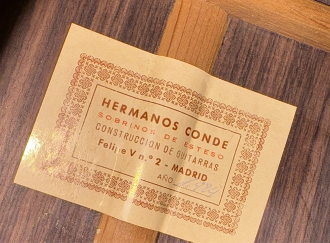
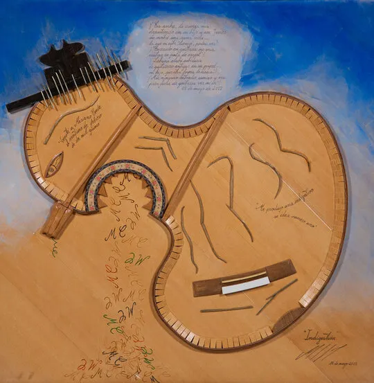
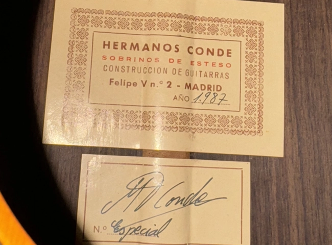

Cabeza de media luna
El rasgo más reconocible de la casa Conde, heredado de Domingo Esteso.

Cinco generaciones construyendo instrumentos que han acompañado a Paco de Lucía, Leonard Cohen, Bob Dylan y Ed Sheeran. Madera maciza, secado natural y una media luna reconocible en cualquier escenario del mundo.
01 — El legado
Cada instrumento nace de una decisión tomada a mano, en un taller de la calle Amnistía donde el tiempo se mide en años de secado de la madera.
El rasgo más reconocible de la casa Conde, heredado de Domingo Esteso.
Las letras MC marcan la tapa junto a una etiqueta numerada escrita a mano.
Cinco o seis maderas por guitarra, secadas entre 10 y 30 años.
Explora por secciones

Flamencas, clásicas y modelos singulares.

YouTube, Twitch y documental.

Ediciones únicas y numeradas.

De 1915 a la actualidad.
Estrenos, premios y prensa.

MC en pared y a escena.

Visítanos en Madrid.